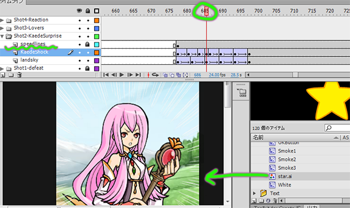

PlopToLayer v2.1
Description | 説明
This command takes selected library items and puts them each on a new layer, properly named, with the first frame at the current time. This saves time for animators who would otherwise have to make new layers, name them appropriately, place objects on the stage, make a new key at the appropriate time, and delete prior keys.
このコマンドは各の選択されたライブラリーアイテムを正しい名前の新しいレイヤーの現在のフレームに置きます。アイテムをアニメーションしたい場合は新しいレイヤーを作って、適切な名を入力して、ライブラリーアイテムをステージにおいて、新しいキーフレームを適切なフレームに挿入して、前のキーフレームを削除しなければなりません。このツールは以上を自動的にしますから、時間を節約します。複数のアイテムも選択できます。

A new layer is placed above the current one. The first keyframe is placed at the playhead, containing the selected library item. Works with multiple items/layers.
新しいレイヤーは現在のレイヤーの上に起きます。一番目のキーフレームはプレイバックヘッドの現在の時間に挿入されます。内容はライブラリーの選択範囲のアイテムです。位数のライブラリーアイテムとレイヤーで動けます。

Installation | インストール
- Right click the download button and "Save As." If you just click, it will open as text in your browser.
- It should be saved to your Flash commands directory. Normally, it is in this location: C:\Users\joseph_jacir\AppData\Local\Adobe\Flash CS6\ja_JP\Configuration\Commands - replace the bolded portion with your own PC login.
- After that, the script will appear in your commands menu at the top of the Flash environment. You can run it by clicking there.
- You can also assign a hotkey to it (I use Ctrl+Shift+P).
- 上記のボタンを右クリックして、「名前をかけて保存」クリックしてください。左クリックすれば、スクリプトはブラウザーにテキストで開きます。
- フラッシュのコマンドフォルダに保存した方がいいです。普通には、このフォルダになります: C:\Users\joseph_jacir\AppData\Local\Adobe\Flash CS6\ja_JP\Configuration\Commands。太字を自分のユーザー名を変わってください。
- それに、スクリプトはフラッシュのコマンドのメニュに現出します。あそこにクリックすると、実行します。
- キーボードショートカットを充てられる。(私はCtrl+Shift+Pを使っています。)